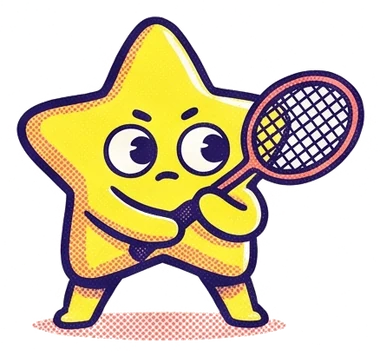
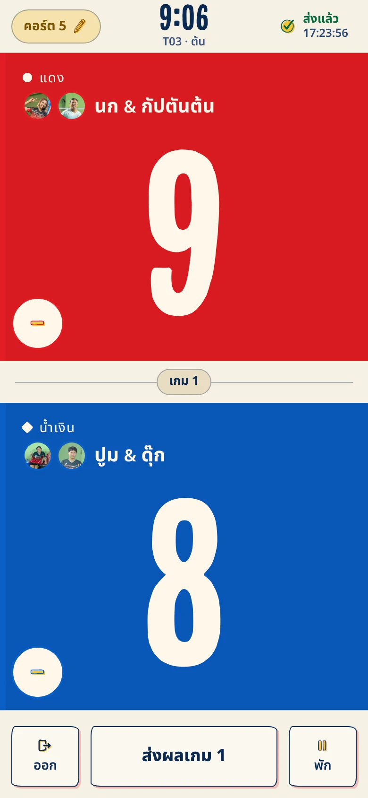
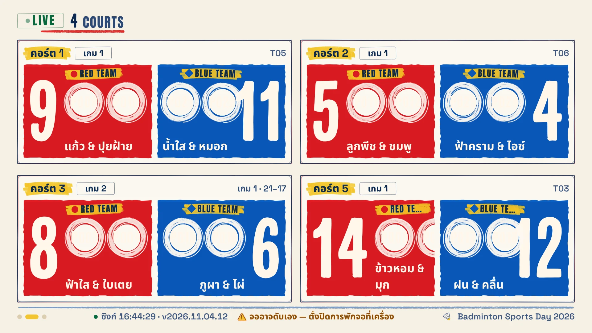
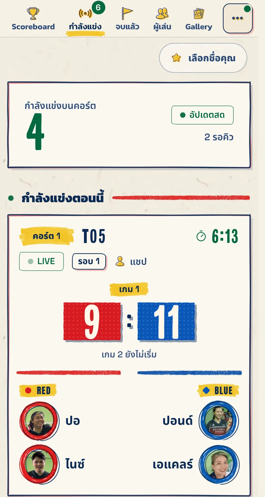
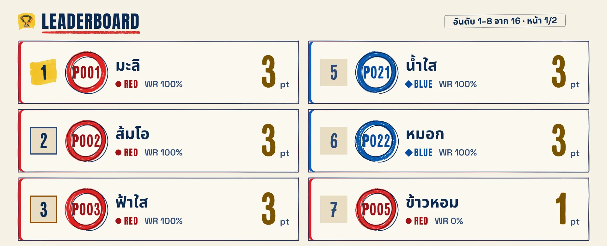

2026 WINTER SPORTS DAY · UMPIRE GUIDE
คู่มือ Umpire
วิธีใช้แอปนับแต้มเรียลไทม์
ภารกิจ Umpire ประจำสนาม YOUR MISSION
 1:1
1:11 สนาม ต่อ
1 Umpire
ทุกสนามจะมี กรรมการ 1 คน คอยนับแต้มและดูแลเกมตลอดแมตช์

เพื่อนในสี
สลับกันมาคุม
ทีมงาน Assign ไว้ให้ว่าใครคุมสนามไหน เพื่อนๆ ในสีเดียวกันผลัดกันเข้ามาทำหน้าที่

นับแต้ม + ดูแล
ความเรียบร้อย
หน้าที่หลักคือ นับแต้มให้ถูก และดูให้เกมจบอย่างเรียบร้อย ไม่ต้องตัดสินอะไรซับซ้อน
แตะที่มือถือ → ขึ้นจอทีวีทันที REAL-TIME

 123
1231แตะครึ่งจอ ของทีมที่ได้แต้ม = +1
2กดผิด? แตะ วงกลม เพื่อลบแต้ม
3จบเกมแล้วกด ส่งผล
Scoreboard บนทีวี · ลุ้นพร้อมกัน


ดูสดบนมือถือ

คะแนน ผลแข่ง และ อันดับ
อัปเดตเองทุกครั้งที่กดแต้ม
1เลือกทีมและ
ชื่อของคุณ
ชื่อของคุณ
2เลือกแมตช์
แล้วเลือกคอร์ต
แล้วเลือกคอร์ต
3แตะแต้มตามเกม
จบแล้วกดส่งผล
จบแล้วกดส่งผล
ใช้ง่าย ไม่ซับซ้อน — กดตามหน้าจอก็จบ!
แอปบอกขั้นตอนทีละหน้า ไม่ต้องจำกติกายากๆ มือใหม่ก็คุมได้ ไม่แน่ใจตรงไหน ถามทีมงานได้เลย